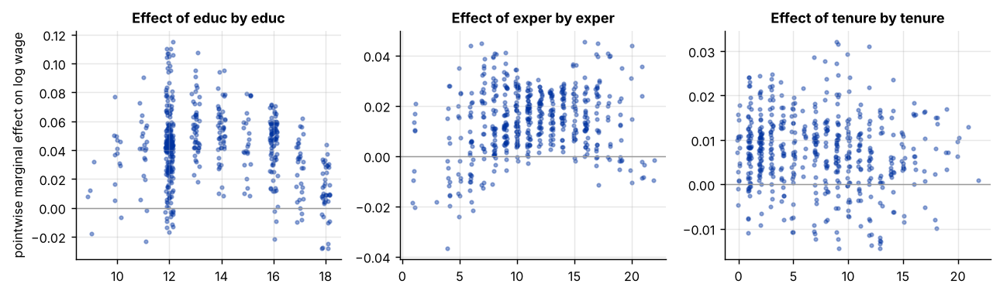

Step 1The question and the model
How do education, experience, tenure, ability and demographic characteristics relate to wages, without assuming that the relationships are linear or additive? The file holds the log wage and characteristics of 935 men. Ordinary regression reports one coefficient per variable. If the return to education differs between people, one number hides that.
Kernel-based regularized least squares (Hainmueller and Hazlett 2014) approximates the regression function by a weighted sum of Gaussian bumps centred on the observations,
where \(\lambda\) penalises roughness and is chosen by leave-one-out cross-validation. Predictors and outcome are standardised, and \(\sigma^2\) is set to the number of predictors. Because \(f\) is smooth and known in closed form, its derivative with respect to each predictor is available for every observation:
The average of these derivatives plays the role of the regression coefficient, and the spread of the derivatives shows how much the effect varies.
What KRLS can and cannot do
It is a description of conditional associations, not a causal estimator. For a 0/1 predictor a derivative is meaningless, so the effect is the difference between predictions with the variable set to 1 and to 0. The fitted function is fully determined by n weights, so the method becomes slow above a few thousand observations (the kernel matrix is n by n).
How to write it: model section
We estimate the wage equation by kernel-based regularized least squares (Hainmueller and Hazlett 2014) with a Gaussian kernel, standardised variables and the penalty chosen by leave-one-out cross-validation. We report the average pointwise marginal effect of each predictor with delta-method standard errors, and its distribution across individuals.
Step 2Load the data and build the estimator
import warnings; warnings.filterwarnings("ignore")
import numpy as np, pandas as pd
import matplotlib.pyplot as plt
import statsmodels.api as sm
from scipy import stats
from scipy.optimize import minimize_scalar
from sklearn.model_selection import train_test_split
df = pd.read_csv("wage2.csv").dropna(subset=["lwage", "educ", "exper", "tenure", "IQ", "married", "black", "south", "urban"])
cols = ["educ", "exper", "tenure", "IQ", "married", "black", "south", "urban"]
y = df["lwage"].values; X = df[cols].values.astype(float)
Xtr, Xte, ytr, yte = train_test_split(X, y, test_size=0.2, random_state=3)
print(f"{len(df)} men; training {len(ytr)}, test {len(yte)}; log wage mean {y.mean():.3f}, sd {y.std(ddof=1):.3f}")
def kern(A, B, s2):
d2 = (A ** 2).sum(1)[:, None] + (B ** 2).sum(1)[None, :] - 2 * A @ B.T
return np.exp(-np.maximum(d2, 0) / s2)
class KRLS:
def fit(self, X, y, lam=None):
self.xm, self.xs = X.mean(0), X.std(0, ddof=1); self.ym, self.ys = y.mean(), y.std(ddof=1)
self.Z = (X - self.xm) / self.xs; t = (y - self.ym) / self.ys
self.s2 = float(X.shape[1]); self.n = len(y)
self.K = kern(self.Z, self.Z, self.s2)
self.d, self.U = np.linalg.eigh(self.K); self.d = np.maximum(self.d, 0)
Uty = self.U.T @ t
def loo(l): # leave-one-out squared error of kernel ridge, closed form
inv = 1 / (self.d + l)
return np.sum(((self.U @ (Uty * inv)) / ((self.U ** 2) @ inv)) ** 2)
self.lam = lam or minimize_scalar(lambda g: loo(np.exp(g)), bounds=(np.log(1e-3), np.log(self.n)), method="bounded").x
self.lam = float(np.exp(self.lam)) if lam is None else lam
self.c = self.U @ (Uty / (self.d + self.lam))
fit = self.K @ self.c
self.eps2 = np.mean((t - fit) ** 2)
self.df = float(np.sum(self.d / (self.d + self.lam)))
self.binary = [set(np.unique(X[:, j])) <= {0.0, 1.0} for j in range(X.shape[1])]
return self
def predict(self, X):
return self.ym + self.ys * kern((X - self.xm) / self.xs, self.Z, self.s2) @ self.c
def effects(self):
n, p = self.Z.shape; pt = np.zeros((n, p)); avg = np.zeros(p); se = np.zeros(p)
for j in range(p):
if self.binary[j]:
Z1, Z0 = self.Z.copy(), self.Z.copy()
Z1[:, j] = (1 - self.xm[j]) / self.xs[j]; Z0[:, j] = (0 - self.xm[j]) / self.xs[j]
D = kern(Z1, self.Z, self.s2) - kern(Z0, self.Z, self.s2); scale = self.ys
else:
D = (-2 / self.s2) * self.K * (self.Z[:, j][:, None] - self.Z[:, j][None, :]); scale = self.ys / self.xs[j]
pt[:, j] = scale * D @ self.c; avg[j] = pt[:, j].mean()
w = scale * D.mean(0) # d avg / d c
v = (self.U.T @ w) / (self.d + self.lam)
se[j] = np.sqrt(self.eps2 * float(v @ v))
return pt, avg, se
m = KRLS().fit(Xtr, ytr)
print(f"lambda chosen by leave-one-out: {m.lam:.3f}; effective degrees of freedom: {m.df:.1f} of {m.n} observations")663 men; training 530, test 133; log wage mean 6.814, sd 0.412 lambda chosen by leave-one-out: 1.713; effective degrees of freedom: 53.6 of 530 observations
How to read it
After dropping men with missing values on the eight predictors, 663 remain (530 for training, 133 for testing). The leave-one-out search chooses lambda = 1.71, which gives 53.6 effective degrees of freedom: the fitted surface is about as flexible as a linear model with 54 parameters, against 9 for OLS. The number of effective degrees of freedom is the honest measure of complexity for a kernel method, and it also sets the degrees of freedom of the t tests below.
Step 3Fit, test and compare with OLS
from sklearn.metrics import mean_squared_error
ols = sm.OLS(ytr, sm.add_constant(Xtr)).fit()
p_ols = ols.predict(sm.add_constant(Xte)); p_k = m.predict(Xte)
rm = lambda p: mean_squared_error(yte, p) ** .5
r2 = lambda p: 1 - ((yte - p) ** 2).sum() / ((yte - yte.mean()) ** 2).sum()
print(pd.DataFrame({"test RMSE": [rm(np.full(len(yte), ytr.mean())), rm(p_ols), rm(p_k)],
"test R2": [r2(np.full(len(yte), ytr.mean())), r2(p_ols), r2(p_k)]},
index=["Mean only", "OLS", "KRLS"]).round(4).to_string())
fit_in = m.predict(Xtr)
print(f"\nIn-sample R2 of KRLS: {1 - ((ytr - fit_in) ** 2).sum() / ((ytr - ytr.mean()) ** 2).sum():.3f} (OLS: {ols.rsquared:.3f})")test RMSE test R2 Mean only 0.4348 -0.0030 OLS 0.3927 0.1817 KRLS 0.3932 0.1797 In-sample R2 of KRLS: 0.361 (OLS: 0.282)
How to read it
Flexibility is not free. KRLS fits the training sample better than OLS (R² 0.36 against 0.28), but on the 133 held-out men it predicts no better: RMSE 0.393 for both and test R² of 0.18 for KRLS against 0.18 for OLS. In this sample a linear log-wage equation is already about as good a predictor as can be built from these eight variables. The value of KRLS here is not prediction but the effect heterogeneity it reveals, in the next steps.
Step 4Average marginal effects against OLS coefficients
pt, avg, se = m.effects()
tstat = avg / se
pval = 2 * stats.t.sf(abs(tstat), m.n - m.df)
tab = pd.DataFrame({"KRLS average effect": avg, "std. err.": se, "t": tstat, "p-value": pval,
"OLS coefficient": ols.params[1:], "OLS std. err.": ols.bse[1:]}, index=cols)
print(tab.round(4).to_string())KRLS average effect std. err. t p-value OLS coefficient OLS std. err. educ 0.0413 0.0069 5.9991 0.0000 0.0529 0.0088 exper 0.0141 0.0034 4.1774 0.0000 0.0169 0.0042 tenure 0.0074 0.0025 2.9380 0.0035 0.0073 0.0032 IQ 0.0033 0.0010 3.1253 0.0019 0.0035 0.0013 married 0.1549 0.0413 3.7518 0.0002 0.2344 0.0512 black -0.0994 0.0458 -2.1675 0.0307 -0.1553 0.0593 south -0.0804 0.0284 -2.8355 0.0048 -0.0896 0.0334 urban 0.1800 0.0281 6.4041 0.0000 0.2060 0.0336
How to read it
The average effects are on the same scale as OLS coefficients: one more year of schooling is associated with 4.1 per cent higher wages on average (standard error 0.7 points), compared with 5.3 per cent in OLS. Experience (1.4 against 1.7), tenure (0.7 against 0.7) and IQ (0.33 against 0.35 points per point) are close to OLS. For the three binary variables the KRLS effect is a first difference, and it is smaller than the OLS coefficient: married 0.155 against 0.234, black −0.099 against −0.155, urban 0.180 against 0.206. All eight are significant at 5 per cent. The standard errors are smaller than the OLS ones because the weighting by a smooth function averages over many observations; they are conditional on the chosen lambda and so ignore the uncertainty from choosing it.
Step 5Where the effects differ: heterogeneity
q = pd.DataFrame(pt, columns=cols).quantile([.1, .25, .5, .75, .9]).T
q.columns = ["10th", "25th", "median", "75th", "90th"]
q["average"] = avg
print("Distribution of the pointwise marginal effect across men in the training sample")
print(q.round(4).to_string())
fig, ax = plt.subplots(1, 3, figsize=(10, 3))
for a, j in zip(ax, ["educ", "exper", "tenure"]):
k = cols.index(j)
a.scatter(Xtr[:, k] + np.random.default_rng(1).uniform(-.15, .15, len(Xtr)), pt[:, k], s=6, alpha=.4, color="#0033a0")
a.axhline(0, color="#999", lw=.8); a.set_title(f"Effect of {j} by {j}"); a.grid(alpha=.3)
ax[0].set_ylabel("pointwise marginal effect on log wage"); plt.tight_layout()Distribution of the pointwise marginal effect across men in the training sample
10th 25th median 75th 90th average
educ 0.0076 0.0274 0.0427 0.0555 0.0708 0.0413
exper -0.0016 0.0057 0.0147 0.0235 0.0281 0.0141
tenure -0.0035 0.0024 0.0077 0.0124 0.0173 0.0074
IQ 0.0001 0.0016 0.0031 0.0048 0.0067 0.0033
married 0.0389 0.1019 0.1607 0.2188 0.2595 0.1549
black -0.3046 -0.1917 -0.0846 -0.0009 0.0793 -0.0994
south -0.1850 -0.1304 -0.0809 -0.0251 0.0154 -0.0804
urban 0.0735 0.1295 0.1900 0.2461 0.2810 0.1800
How to read it
The average hides large differences. For schooling the middle half of men have effects between 2.7 and 5.6 per cent per year, and the 10th percentile is 0.8 per cent against 7.1 per cent at the 90th. The effect of experience is negative or near zero for about a tenth of the men (10th percentile −0.16 points) and 2.8 points at the 90th percentile. The effect of being black ranges from −30 per cent at the 10th percentile to +8 per cent at the 90th, with a median of −8 per cent, so the average of −10 per cent summarises a wide spread. The scatter plots show which values of the variable the effect varies with. These are descriptions of the fitted surface; a spread of effects is not proof that the effect truly varies, since the pointwise effects are themselves estimates.
Step 6Sensitivity to the penalty
rows = []
for f in [0.1, 0.3, 1, 3, 10]:
mm = KRLS().fit(Xtr, ytr, lam=m.lam * f)
_, a2, s2 = mm.effects()
rows.append({"lambda": mm.lam, "eff. df": mm.df, "test RMSE": rm(mm.predict(Xte)),
"avg effect of educ": a2[0], "avg effect of exper": a2[1], "avg effect of tenure": a2[2]})
print(pd.DataFrame(rows).round(4).to_string(index=False))lambda eff. df test RMSE avg effect of educ avg effect of exper avg effect of tenure 0.1713 127.8915 0.4072 0.0508 0.0156 0.0108 0.5138 88.9125 0.3975 0.0475 0.0156 0.0093 1.7126 53.5823 0.3932 0.0413 0.0141 0.0074 5.1378 30.3064 0.3923 0.0333 0.0110 0.0058 17.1259 14.4336 0.3963 0.0227 0.0062 0.0041
How to read it
The penalty matters for the effects more than for prediction. Test RMSE is almost flat across a hundredfold range of lambda (0.392 to 0.407 for the first four rows), but the average effect of education moves from 0.051 with weak regularisation to 0.023 with very strong regularisation (14 effective degrees of freedom). Strong smoothing pulls the surface towards a flat function and shrinks every effect towards zero. Report the leave-one-out choice and show at least one neighbouring value.
Step 7What to report in the paper
| Item | What to give |
|---|---|
| Sample | Number of observations (and the training/test split, if used) |
| Specification | Kernel, sigma squared, standardisation |
| Penalty | Lambda by leave-one-out and the effective degrees of freedom |
| Fit | Out-of-sample R² or RMSE next to OLS |
| Effects | Average marginal effect, standard error and p-value for every predictor, first differences for binary ones |
| Heterogeneity | Quartiles of the pointwise effects and a plot against the variable |
| Sensitivity | Average effects under a smaller and a larger lambda |
How to write it: results section
The average marginal effect of an additional year of schooling is 4.1 per cent (standard error 0.7), somewhat below the OLS coefficient of 5.3. The effect varies across men: its interquartile range is 2.7 to 5.6 per cent. Out-of-sample, KRLS predicts about as well as OLS (RMSE 0.393 for both), so we use it to describe the heterogeneity of the associations and not to improve prediction. The estimates are conditional associations and not causal effects.
Step 8Common mistakes
- Reading a pointwise effect as a precise individual effect. Only the averages come with standard errors.
- Treating the standard errors as accounting for the choice of lambda. They are conditional on it.
- Interpreting a derivative for a 0/1 variable. Use the first difference, as the table does.
- Using KRLS on tens of thousands of observations. The n by n kernel matrix needs a subsample or an approximation.
- Expecting better predictions than a linear model. When the relationships are close to linear, KRLS reproduces OLS at a higher cost.
- Using KRLS to claim causation. It describes associations conditional on the included variables.